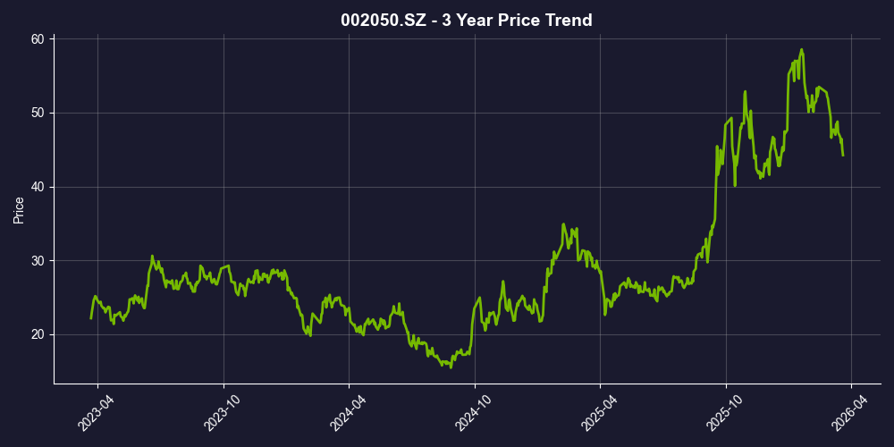

功能饮料龙头 | 全国化扩张 | 第二曲线放量
东鹏饮料已构建起“东鹏特饮”+“补水啦”双引擎驱动模式。2024年营收达158.4亿，2025年预计突破200亿大关。公司成功摆脱对广东单一大本营的依赖，华北等区域增速超80%。虽“补水啦”毛利率偏低引发部分市场担忧，但依靠规模效应和精细化费用管控，整体净利率逆势提升，机构普遍看好其长线“买入”价值。

数据来源: Yahoo Finance | 过去52周周线走势
| 指标 | 2023年 | 2024年 | 2025年前三季度 | YoY (25Q3) |
|---|---|---|---|---|
| 营业收入 (亿元) | 112.5 | 158.4 | 168.44 | +34.1% |
| 归母净利润 (亿元) | 20.4 | 33.3 | 47.78 | +38.9% |
| 毛利率 | 43.1% | 43.2% | 45.17% | +1.9pct |
| 净利率 | 18.1% | 21.0% | 28.37% | +7.3pct |
| 存货周转天数 | — | 32.16天 | — | 2024 |
| 应收账款周转天数 | — | 1.36天 | — | 2024 |
* 价值投资关键指标：存货周转天数32.16天，应收账款周转天数1.36天，显示快消品公司的高周转效率。数据来源：Sina Finance
摆脱大本营依赖： 2024年前三季度，广东大本营的营收占比已降至30%以下。相比之下，华东、华中、西南及华北市场均实现高速增长（其中华北区域同比增速高达83.54%）。
渠道下沉壁垒： 截至2025年三季度，东鹏拥有3200余家经销商、超430万家有效活跃终端网点。极致的渠道精耕、冰冻化陈列大战以及“几十年对准一个城墙冲锋”的执行力，构筑了难以被新品牌撼动的终端壁垒。
成功打造第二曲线： 2024年“补水啦”销售额近15亿(YoY +280%)，2025年前三季度更是达到28.47亿元，营收占比跃升至16.91%。东鹏成功打破了“单品依赖症”的魔咒。
精准定位与高性价比： 通过赞助NYBO等体育赛事绑定“运动补水”场景，推出555ml和1L大包装，以及380ml小规格切入通勤碎片化场景。2024年平均出厂价仅2.26元/升（东鹏特饮为4.31元/升），以极致性价比降维打击竞品。
东鹏特饮展现出极强的跨周期成长性，“全国化网点扩张 + 补水啦电解质水放量”的双击逻辑正在兑现。瑕不掩瑜，短期的大单品增速换挡和新品低毛利无法掩盖其整体利润的高速增长。
数据来源：财务数据来源于公司年报及季度报告；估值指标基于2026年3月22日收盘价计算；盈利预测来源于华创证券、中信证券等机构一致预期。